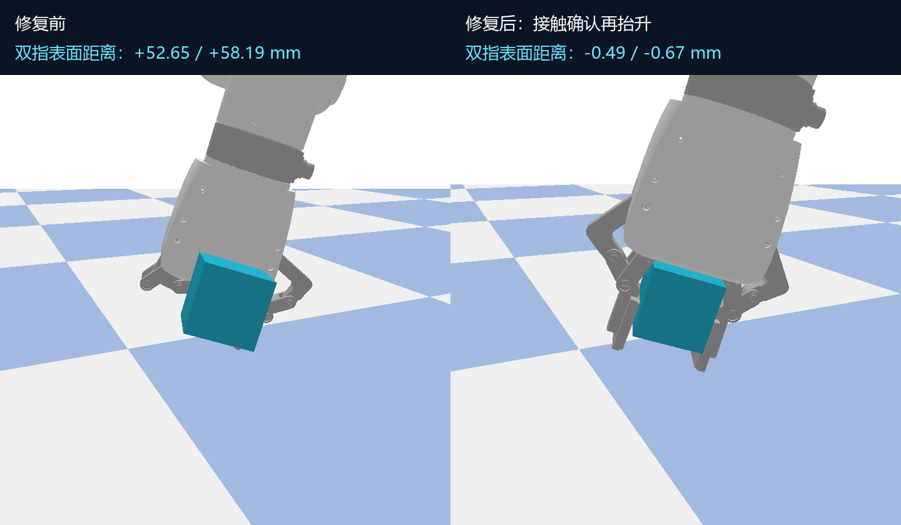

实际 PyBullet 仿真 · 名义 100 g · 短距离竖直抛接 · 修复抛前夹持间隙
局部视图与全景来自同一实际物理场景。释放后没有物体固定约束，接回依靠真实碰撞与夹持。末尾 1 秒为结果定格，物理保持时间另由逐帧记录审计。
先确认物体离手，再根据本轮下降观测闭合。夹持后保留接触时的手指角度并施加小预紧，避免继续全闭合将方块挤出。

修复全部联动关节控制与约束坐标框架，增加抬升前双指接触门槛和全程贴合检查。
验证范围为 50 mm 方块、80–120 g 的离散仿真对照，以及 0–2 mm 位置噪声、0–33.3 ms 延迟和 0–10% 漏帧。高抛和真实硬件仍未验证。
完整结果与复现 · 间隙修复说明 · 独立审计 · 20 次原始结果 · 已验证短抛 skill